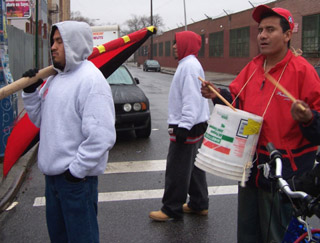

Submitted on Thu, 01/18/2007 - 3:26am
Immigrant Workers Fighting Back!
March down Knickerbocker to demand equal rights for immigrant workers!
Join Us
Saturday January 20th and Demand Justice!
Saturday at 11am meet up at Make The Road by Walking - Menahan and Myrtle .
March with us down Knickerbocker Ave - first stop Associated supermarket and then to Handyfat!
In an attempt to rise out of sweatshop conditions, immigrant workers in Brooklyn have engaged in strikes, Boycotts protests, and filed lawsuits alleging systematic wage and overtime violations.
Join Make the Road by Walking and the IWW in a march through Bushwick to protest the widespread failure to pay immigrant workers minimum wage and overtime throughout Bushwick. At Associated Supermarket owners have committed egregious wage violations against their workers, including failure to pay minimum wage and overtime, and having some workers paid in tips only with absolutely no benefits. At Handyfat, a warehouse that distributes restaurant supplies, 22 workers were illegally fired over the holidays for organizing a union with the IWW and demanding back pay for years of failure to pay minimum wage and overtime.
Submitted on Wed, 01/17/2007 - 5:45pm
 For over ten years the IWW.ORG project has been helping workers around the world learn, communicate and organize. This web page is about how you can help the IWW.ORG project.
For over ten years the IWW.ORG project has been helping workers around the world learn, communicate and organize. This web page is about how you can help the IWW.ORG project.
Together we provide the following services to IWW members and to workers everywhere:
- We maintain these websites, including static content, news, forums, and RSS feeds.
- We've signed up hundreds of new IWW members online.
- We provide e-mail lists and email accounts to IWW members.
IWW.ORG is sustained by the financial support of membership of the Industrial Workers of the World, sympathetic donors, as well as volunteer efforts and equipment donated by many a IWW member.
Submitted on Wed, 01/17/2007 - 1:27am
click here for video footage.
On January 15, 2007, Martin Luther King, Jr. Day, over one hundred and twenty IWW union members, supporters and labor movement allies marched on and picketed the warehouse of Handyfat Trading Inc. in Brooklyn. Ten days earlier, Handyfat owner Dennis Ho illegally fired nine workers in retaliation for their union activity, but allegedly over immigration status. Monday, Ho shut down Handyfat’s operations rather than face the picketing workers, at a loss of tens of thousands of dollars in business. With its workforce out on strike and the sight of daily picket lines a looming reality, Handyfat was given two choices by the Wobblies: back down or shut down.
Handyfat owner Dennis Ho fired the workers after the union filed a federal lawsuit demanding payment of over $100,000 in unpaid back wages. Union members say that management’s claim that workers were fired because of their immigration status is ridiculous, as many of those workers have been at Handyfat for over ten years, and were only fired after organizing on the job.
“The boss fired us now and it’s unjust because we’ve always worked very hard for him and all of a sudden he says he fired us because we don’t have papers,” said Handyfat worker Pedro Campos.
Workers like Pedro were not alone on the picket line. Union members from Laborers Local 79 and 108, Transit Workers Union Local 100, the 318 Restaurant Workers Union, United Electrical and the IWW’s Starbucks Workers Union marched with them, along with activists from the Million Worker March movement, NY Metro Area Anarchist Alliance, the Internationalists and Make the Road By Walking/Se Hace Camino Al Andar. The march and picket line even had its own marching band ensemble, courtesy of the Hungry March Band and Rude Mechanical Orchestra. When organizers told the police escort they intended to march right down the high-traffic Morgan Avenue to the warehouse, the only response from police was, “go for it.” Energy was high and it was clear their momentum was only building.
“A line has been drawn in the sand,” said Billy Randel, one of the union’s organizers. “We’re gonna fight, we’re disciplined and we will win.”
The strike at Handyfat is a part of a much larger campaign confronting unfair labor practices and mistreatment at food and restaurant supply warehouses in Brooklyn and Queens. Other companies include EZ Supply/Sunrise Plus, where thirteen workers were fired on December 28th for union activity, Amersino, where five workers were fired after voting to form a union, Top City Produce and Giant Big Apple Beer, Inc. Picket lines will stay up at Handyfat and organizing will continue at other warehouses until the fired workers are reinstated and back wages are paid in full. Workers say they’re in it for the long haul, despite the hardships.
“It’s clear that it was discrimination for trying to form a union,” another fired worker, Antonio Rodriguez added, “because he said when I have work for you, I’ll let you know. And he never called.”
For more information on the ongoing IWW’s Food Industry and Allied Workers campaign, visit http://www.wobblycity.org or contact iww.nyc@gmail.com.
Submitted on Sun, 01/14/2007 - 4:17am
By Eric Lee - Industrial Worker, February 2007; originally published here.
 Several years ago, shortly after it was launched I looked into Google's keyword-based online advertising as a tool for trade union campaigns. I thought it seemed a really good idea, tested it, and promoted its use to unions.
Several years ago, shortly after it was launched I looked into Google's keyword-based online advertising as a tool for trade union campaigns. I thought it seemed a really good idea, tested it, and promoted its use to unions.
Today, I think that more and more unions and campaigning organizations recognize that by using Google ads, we can send out a subversive message about corporations at a very low price to a very large audience.
Submitted on Thu, 01/11/2007 - 4:17am
Workers at all Landmark Theaters in California were recently given a $.75 an hour raise. This comes on top of the raise that workers received several months ago. Which occured shortly after the union election victory.
The previous raise was nationwide. The recent raise to California employees is connected to the minimum wage or so Landmark Theater Co. says. Whether or not the recent raise is connected to the minimum wage is debatable. Most likely it is connected to the presence of a union at the Shattuck Cinemas in Berkeley.
Further evidence of the company doling out raises and benefits to keep more workers from going union is a health care plan that is now available to some workers. Also holiday pay was restored to all shifts on Christmas and New Year after a one year absence. As contract negotiations drag on in Berkeley, the company continues to come up with money they claimed they didn’t have. Keeping the rest of their theaters union free is the likely reason for this.